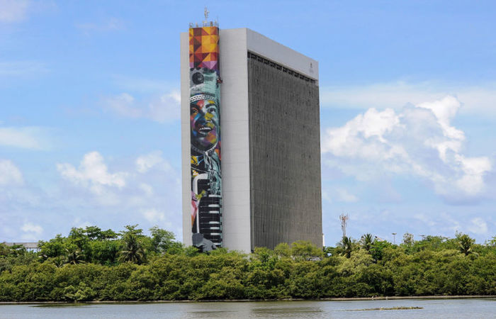
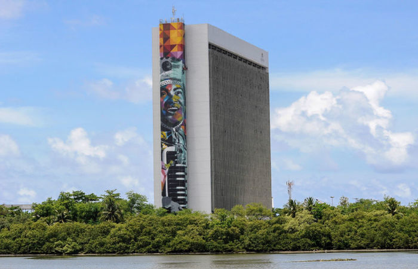
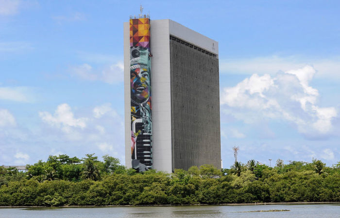

Parceiros e apoiadores


 

Doar com eficiência. Nutrir com propósito.
Kg de alimentos salvos
Parceiros cadastrados
Instituições beneficiadas

Assista ao nosso vídeo e entenda como estamos combatendo o desperdício de alimentos e a fome
Doadores e receptores se cadastram em nossa plataforma de forma rápida e segura
Doadores anunciam os alimentos disponíveis com descrição, quantidade e validade
Nossa inteligência conecta doadores a receptores próximos e com necessidades compatíveis
Coletamos ou você entrega - temos opções flexíveis para todos os casos
Alimentos que seriam descartados viram refeições nutritivas ou adubo de qualidade
Contribuímos diretamente com a segurança alimentar de comunidades vulneráveis
Emitimos certificado de doação com valor fiscal para seus negócios
Refeições distribuídas por mês
Redução no desperdício de parceiros
Adubo produzido de alimentos não consumíveis
Rastreabilidade dos alimentos doados
"O BOIA nos ajudou a reduzir nosso desperdício em 40% e ainda contribuir com a comunidade."
Supermercado Verde
"Graças às doações pelo BOIA, conseguimos alimentar 50% a mais de pessoas em nossa cozinha comunitária."
Cozinha Solidária
Junte-se a dezenas de empresas e instituições que já estão transformando vidas através do BOIA